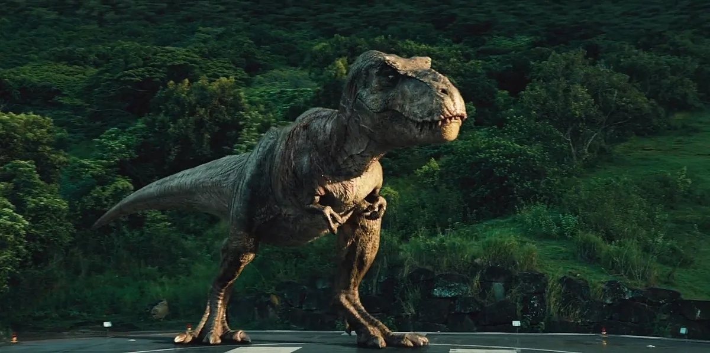
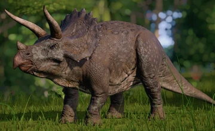
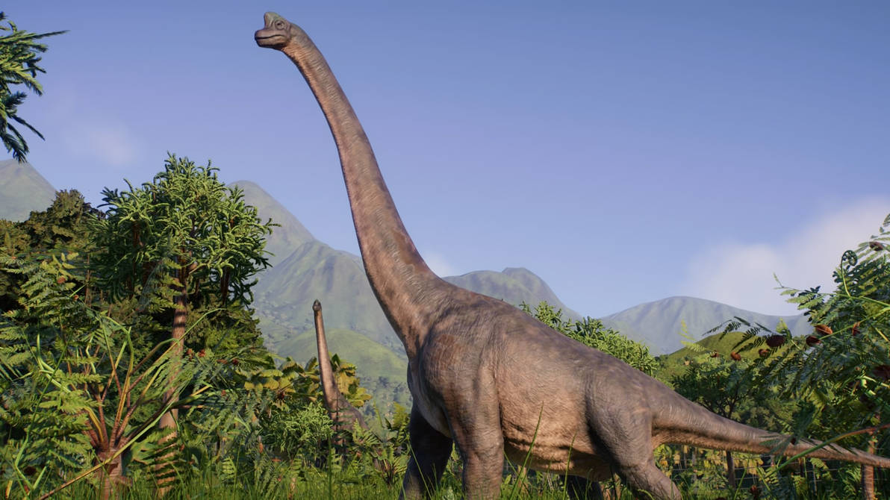
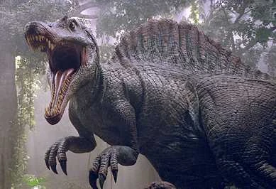

🎥 Um documentário jurássico
Bem-vindo ao Jurassic Doc! Aqui você vai conhecer os dinossauros mais famosos da franquia Jurassic Park de forma simples e divertida.
- Velociraptor:Ágil e muito inteligente. Trabalha em grupo para caçar.
- T-rex:Um predador gigante com dentes afiados e rugido imponente.
- Tricerátops: Herbívoro com três chifres e uma aparência imponente.
- Brachiossauro: Enorme e pacífico, se alimenta do topo das árvores.
- Espinossauro: Um dos poucos que nadava! Forte, rápido e assustador.
🦖 Galeria
| Espécie | Imagem |
|---|---|
| Velociraptor |  |
| T-Rex |  |
| Tricerátops |  |
| Brachiossauro |  |
| Espinossauro |  |